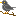

Icon Library Page 46
The icons listed here have been 'described' using multiple types of neural networks. Much of the data is junk. The label is the most likely object in the image, however none of this has been verified by a human. When this page is re-generated the labeling might change.
The best way to use this page is to use the ctrl+f search function.
Page Index
[1] [2] [3] [4] [5] [6] [7] [8] [9] [10] [11] [12] [13] [14] [15] [16] [17] [18] [19] [20] [21] [22] [23] [24] [25] [26] [27] [28] [29] [30] [31] [32] [33] [34] [35] [36] [37] [38] [39] [40] [41] [42] [43] [44] [45] [46] [47] [48] [49] [50] [51] [52] [53] [54] [55] [56] [57] [58] [59] [60] [61] [62] [63] [64] [65] [66] [67]
| image | labels |
|---|---|
| person, Persian cat, macaque, analog clock, polecat, book jacket, dust cover, dust jacket, dust wrapper | |
| person, Windsor tie, Band Aid, Windsor tie, Windsor tie, book jacket, dust cover, dust jacket, dust wrapper | |
| spaceship, analog clock, magnetic compass, modem, analog clock, pick, plectrum, plectron | |
| dog, chain saw, chainsaw, stopwatch, moving van, spatula, pick, plectrum, plectron | |
| spaceship, pick, plectrum, plectron, chain saw, digital clock, spatula, chain saw, chainsaw | |
| spaceship, slot, one-armed bandit, safe, safe, space bar, scoreboard | |
| flower, traffic light, traffic signal, stoplight, digital clock, digital clock, digital clock, strawberry | |
| person, pick, plectrum, plectron, magnetic compass, digital clock, magnetic compass, pick, plectrum, plectron | |
| person, chain saw, chainsaw, scoreboard, digital clock, plunger, pick, plectrum, plectron | |
| person, espresso maker, espresso maker, espresso maker, face powder, espresso maker | |
| phone, chain saw, chainsaw, analog clock, ocarina, stopwatch, pick, plectrum, plectron | |
| person, honeycomb, ocarina, analog clock, ocarina, pick, plectrum, plectron | |
| phone, stopwatch, stop watch, digital watch, digital watch, stopwatch, stopwatch, stop watch | |
| tree, pick, plectrum, plectron, maraca, digital clock, plunger, three-toed sloth, ai, Bradypus tridactylus | |
| phone, hand-held computer, hand-held microcomputer, thresher, hand-held computer, chain saw, hand-held computer, hand-held microcomputer | |
| person, panpipe, pandean pipe, syrinx, panpipe, upright, chain saw, panpipe, pandean pipe, syrinx | |
| person, revolver, six-gun, six-shooter, digital watch, digital clock, face powder, stopwatch, stop watch | |
| person, stopwatch, stop watch, barometer, analog clock, analog clock, pick, plectrum, plectron | |
| person, chain saw, chainsaw, chain saw, digital clock, pick, rock beauty, Holocanthus tricolor | |
| person, prayer rug, prayer mat, shoji, digital clock, whistle, panpipe, pandean pipe, syrinx | |
| car, chain saw, chainsaw, moving van, ambulance, chain saw, stopwatch, stop watch | |
| tree, stopwatch, stop watch, digital clock, digital clock, digital clock, analog clock | |
| phone, panpipe, pandean pipe, syrinx, panpipe, panpipe, Windsor tie, panpipe, pandean pipe, syrinx | |
| cat, jersey, T-shirt, tee shirt, book jacket, digital clock, whistle, panpipe, pandean pipe, syrinx | |
| person, pick, plectrum, plectron, book jacket, digital clock, analog clock, pick, plectrum, plectron | |
| person, pick, plectrum, plectron, jersey, Windsor tie, Windsor tie, pick, plectrum, plectron | |
| spaceship, chain saw, chainsaw, digital clock, traffic light, maraca, pick, plectrum, plectron | |
| spaceship, moving van, moving van, moving van, spatula, chain saw, chainsaw | |
| person, slot, one-armed bandit, slide rule, screen, safety pin, slide rule, slipstick | |
| spaceship, panpipe, pandean pipe, syrinx, hair spray, panpipe, maraca, hair spray | |
| dog, chain saw, chainsaw, chain saw, power drill, cleaver, pick, plectrum, plectron | |
| tree, Windsor tie, safety pin, waffle iron, theater curtain, pick, plectrum, plectron | |
| person, chain saw, chainsaw, safety pin, frying pan, whistle, hair slide | |
| person, hair spray, spatula, whistle, whistle, chain saw, chainsaw | |
| tree, packet, Kerry blue terrier, frying pan, rock beauty, jersey, T-shirt, tee shirt | |
| person, ski, desktop computer, cleaver, cleaver, chain saw, chainsaw | |
| person, ski, spatula, digital clock, ski, hand-held computer, hand-held microcomputer | |
| phone, cleaver, meat cleaver, chopper, analog clock, spotlight, whistle, siamang, Hylobates syndactylus, Symphalangus syndactylus | |
| person, plunger, plumber's helper, panpipe, oboe, chain saw, matchstick | |
| car, cleaver, meat cleaver, chopper, lotion, power drill, safety pin, chain saw, chainsaw | |
| person, kite, envelope, nematode, nematode, envelope | |
| person, analog clock, digital clock, television, digital clock, lipstick, lip rouge | |
| person, switch, electric switch, electrical switch, hand-held computer, switch, face powder, lipstick, lip rouge | |
| person, jersey, T-shirt, tee shirt, jersey, digital watch, jersey, panpipe, pandean pipe, syrinx | |
| dog, chain saw, chainsaw, panpipe, panpipe, whistle, maraca | |
| spaceship, stopwatch, stop watch, stopwatch, chain saw, punching bag, shield, buckler | |
| person, screen, CRT screen, screen, switch, screen, pick, plectrum, plectron | |
| sun, switch, electric switch, electrical switch, switch, binder, book jacket, digital clock | |
| cat, affenpinscher, monkey pinscher, monkey dog, lotion, screen, affenpinscher, jersey, T-shirt, tee shirt | |
| person, Band Aid, nipple, sunscreen, lotion, nipple | |
| person, screw, screw, chain saw, oboe, letter opener, paper knife, paperknife | |
|  | person, chain saw, chainsaw, waffle iron, frying pan, cleaver, chain saw, chainsaw |
| phone, birdhouse, gong, oil filter, gong, face powder | |
| person, loupe, jeweler's loupe, pick, ocarina, ocarina, jersey, T-shirt, tee shirt | |
| tree, chain saw, chainsaw, chain, chain, safety pin, abacus | |
| tree, consomme, muzzle, web site, honeycomb, panpipe, pandean pipe, syrinx | |
| phone, cleaver, meat cleaver, chopper, safety pin, binder, geyser, pedestal, plinth, footstall | |
| person, scoreboard, scoreboard, lotion, prison, panpipe, pandean pipe, syrinx | |
| person, hand-held computer, hand-held microcomputer, Windsor tie, hand-held computer, scoreboard, digital watch | |
| person, cassette, digital watch, espresso maker, sunscreen, gibbon, Hylobates lar | |
| person, pick, plectrum, plectron, packet, digital watch, jersey, comic book | |
| spaceship, pedestal, plinth, footstall, hourglass, hourglass, plunger, bearskin, busby, shako | |
| dog, hair spray, hair spray, slot, digital clock, golden retriever | |
| person, stopwatch, stop watch, bolo tie, stopwatch, pick, pick, plectrum, plectron | |
| phone, guillotine, digital clock, crossword puzzle, pick, panpipe, pandean pipe, syrinx | |
| dog, whiskey jug, whiskey jug, candle, whistle, tick | |
| person, scoreboard, scoreboard, scoreboard, hair spray, jersey, T-shirt, tee shirt | |
| person, slot, one-armed bandit, prayer rug, digital clock, abacus, panpipe, pandean pipe, syrinx | |
| tree, analog clock, digital clock, digital clock, soccer ball, soccer ball | |
| person, stopwatch, stop watch, switch, digital watch, sunscreen, lesser panda, red panda, panda, bear cat, cat bear, Ailurus fulgens | |
| cat, chain saw, chainsaw, pick, pick, eggnog, pick, plectrum, plectron | |
| dog, guillotine, guillotine, guillotine, safety pin, panpipe, pandean pipe, syrinx | |
| dog, oil filter, ocarina, ocarina, oil filter, polecat, fitch, foulmart, foumart, Mustela putorius | |
| person, bearskin, busby, shako, pick, rock beauty, rock beauty, pick, plectrum, plectron | |
| person, hair spray, hair spray, digital clock, digital clock, digital clock | |
| phone, cassette player, cassette player, cassette player, face powder, analog clock | |
| person, combination lock, hand-held computer, frying pan, hand-held computer, hourglass | |
| person, Windsor tie, thresher, Windsor tie, ocarina, triceratops | |
| phone, cardoon, cardoon, Petri dish, velvet, analog clock | |
| person, lotion, lotion, lotion, lotion, pedestal, plinth, footstall | |
| person, barrel, cask, whiskey jug, barrel, Windsor tie, tiger, Panthera tigris | |
| phone, cleaver, meat cleaver, chopper, desktop computer, screen, screen, oil filter | |
| dog, muzzle, langur, Windsor tie, whiskey jug, nipple | |
| person, velvet, prayer rug, jigsaw puzzle, velvet, pick, plectrum, plectron | |
| tree, custard apple, analog clock, digital clock, rock beauty, rock beauty, Holocanthus tricolor | |
| person, stopwatch, stop watch, digital watch, power drill, Windsor tie, bearskin, busby, shako | |
| person, revolver, six-gun, six-shooter, pick, digital clock, black grouse, pick, plectrum, plectron | |
| person, packet, nipple, punching bag, Windsor tie, punching bag, punch bag, punching ball, punchball | |
| phone, ice bear, polar bear, Ursus Maritimus, Thalarctos maritimus, safety pin, grey whale, killer whale, nipple | |
| person, hatchet, nail, whistle, screw, hatchet | |
| person, stopwatch, stop watch, assault rifle, panpipe, spatula, pick, plectrum, plectron | |
| tree, panpipe, pandean pipe, syrinx, panpipe, rock beauty, velvet, packet | |
| phone, web site, website, internet site, site, web site, spatula, spatula, switch, electric switch, electrical switch | |
| person, stopwatch, stop watch, switch, frying pan, ocarina, stopwatch, stop watch | |
| person, stopwatch, stop watch, barometer, stopwatch, pick, otterhound, otter hound | |
| person, chain saw, chainsaw, digital clock, digital clock, jack-o'-lantern, jack-o'-lantern | |
| dog, ocarina, sweet potato, ocarina, digital clock, rock beauty, three-toed sloth, ai, Bradypus tridactylus | |
| phone, hair spray, whistle, lotion, whistle, nipple | |
| person, maraca, ocarina, ocarina, ocarina, bearskin, busby, shako | |
| person, combination lock, safety pin, safety pin, safety pin, safety pin |